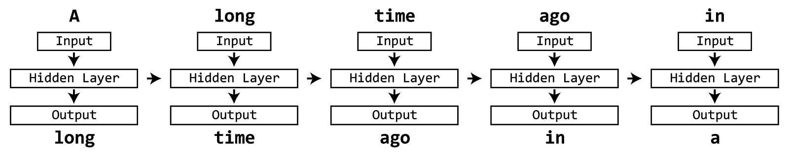

background-image: url('../figs/title.png') --- class: center, middle # Chapter 9 - Recurrent Neural Networks --- # COCO dataset has captions! .col50[![4 images from the COCO dataset with example captions. Top left image shows a baseball game with the caption: "The man at bat readies to swing at the pitch while the umpire looks on". Top right image shows a bus station with the caption: "A large bus sitting next to a very tall building". Bottom left shows a horse pulling a cart with the caption: "A horse carrying a large load of hay and two people sitting on it". Bottom right image shows a bedroom with the caption: "Bunk bed with a narrow shelf sitting underneath it". ](../figs/coco.png)] .col50[ - 5 captions per image - Detection/segmentation is (maybe) just pattern matching - Captioning requires _understanding_ - Harder: have to model both visual info and language ] --- # Language processing using neural networks - Images are static, language has a component of time - Characters/words appear in sequence, need to read previous words to understand subsequent ones (like frames in a video) - How do we process time-series data using neural networks? --- class: center, middle, big ``` A long time ago in a ______ far, far away... ``` --- class: center, middle, big ``` A long time ago in a galaxy far, far away... ``` --- # Neural networks + language .col70[ - Naive approach - Input: string - Output: string - How would we encode? - ~3000 common words - 1-hot encoding of all 6-word strings: - 18,000 possible inputs - small vocabulary - how to handle 7-word or 8-word strings? - retrain network? what about longer output (multi-word)? ] .col30.small[ <figure class="chart"> <div class="mermaidsvg"> <div class="mermaid"> graph TD string(A long time ago in a) --> |encode| input[Input] subgraph Neural Network input --> hidden[Hidden Layer] hidden --> output[Output] end output --> |decode| outstring(galaxy) </div> </div> <figcaption>Naive network architecture for processing language data. <a target="_blank" href="../chartsrc?src=%0Agraph+TD%0A++++string%28A+long+time+ago+in+a%29+--%3E+%7Cencode%7C+input%5BInput%5D%0A++++subgraph+Neural+Network%0A++++input+--%3E+hidden%5BHidden+Layer%5D%0A++++hidden+--%3E+output%5BOutput%5D%0A++++end%0A++++output+--%3E+%7Cdecode%7C+outstring%28galaxy%29%0A">(source)</a></figcaption> </figure> ] --- # Recurrent neural network - Handle sequential data - How? - During each iteration network: - Read one token (word, character, etc) at a time - Produce output - Update internal memory <figure class="image">  <figcaption></figcaption> </figure> --- # Recurrent neural network .col50[- Handle sequential data - How? - During each iteration network: - Read one token (word, character, etc) at a time - Produce output - Update internal memory ] .col50[ <figure class="chart"> <div class="mermaidsvg"> <div class="mermaid"> graph TB Input --> Memory Memory --> Output Memory --> |Update Rule| Memory </div> </div> <figcaption>Recurrent network, memory gets updated from the input and previous time-step's memory, then produces output. <a target="_blank" href="../chartsrc?src=%0Agraph+TB%0A++++Input+--%3E+Memory%0A++++Memory+--%3E+Output%0A++++Memory+--%3E+%7CUpdate+Rule%7C+Memory%0A">(source)</a></figcaption> </figure> ] --- # Vanilla RNN .col50[ Given input \\(x\_t\\), previous memory \\(h\_{t-1}\\), produce output \\(y\_t\\) - \\(h\_t = f(w\cdot x\_t + v \cdot h\_{t-1}) \\) - \\(y\_t = h\_t \\) Note that: - output is same as current memory - \\(w\\) takes input and updates memory - \\(v\\) takes previous memory and updates current - \\(f\\) is some activation function ] .col50[ <figure class="chart"> <div class="mermaidsvg"> <div class="mermaid"> graph TB Input["\(x_t\)"] --> |"\(w\)"| Memory["\(h_t\)"] Memory --> Output["\(y_t\)"] Memory --> |"\(v\)"| Memory </div> </div> <figcaption>Example of vanilla RNN structure. <a target="_blank" href="../chartsrc?src=%0Agraph+TB%0A++++Input%5B%22%5C%28x_t%5C%29%22%5D+--%3E+%7C%22%5C%28w%5C%29%22%7C+Memory%5B%22%5C%28h_t%5C%29%22%5D%0A++++Memory+--%3E+Output%5B%22%5C%28y_t%5C%29%22%5D%0A++++Memory+--%3E+%7C%22%5C%28v%5C%29%22%7C+Memory%0A">(source)</a></figcaption> </figure> ] --- # Vanilla RNN .col50[ Given input \\(x\_t\\), previous memory \\(h\_{t-1}\\), produce output \\(y\_t\\) In practice, append \\(x\_t\\) to \\(h\_{t-1}\\) and use one set of weights - \\(h\_t = f(w\cdot [x\_t, h\_{t-1}]) \\) - \\(y\_t = h\_t \\) ] .col50[ <figure class="chart"> <div class="mermaidsvg"> <div class="mermaid"> graph TB Input["\(x_t\)"] --> |"\(w\)"| Memory["\(h_t\)"] Memory --> Output["\(y_t\)"] Memory --> |"\(v\)"| Memory </div> </div> <figcaption>Example of vanilla RNN structure. <a target="_blank" href="../chartsrc?src=%0Agraph+TB%0A++++Input%5B%22%5C%28x_t%5C%29%22%5D+--%3E+%7C%22%5C%28w%5C%29%22%7C+Memory%5B%22%5C%28h_t%5C%29%22%5D%0A++++Memory+--%3E+Output%5B%22%5C%28y_t%5C%29%22%5D%0A++++Memory+--%3E+%7C%22%5C%28v%5C%29%22%7C+Memory%0A">(source)</a></figcaption> </figure> ] --- # Vanilla RNN .col50[ Given input \\(x\_t\\), previous memory \\(h\_{t-1}\\), produce output \\(y\_t\\) In practice, append \\(x\_t\\) to \\(h\_{t-1}\\) and use one set of weights - \\(h\_t = f(w\cdot [x\_t, h\_{t-1}]) \\) - \\(y\_t = h\_t \\) Problem: long-term dependence - memory computed from scratch every round - hard to remember things for a long time - memory state after 5-6 words will be VERY different even though it is the same sentence, paragraph, etc - want longer term memory!! ] .col50[ <figure class="chart"> <div class="mermaidsvg"> <div class="mermaid"> graph TB Input["\(x_t\)"] --> |"\(w\)"| Memory["\(h_t\)"] Memory --> Output["\(y_t\)"] Memory --> |"\(v\)"| Memory </div> </div> <figcaption>Example of vanilla RNN structure. <a target="_blank" href="../chartsrc?src=%0Agraph+TB%0A++++Input%5B%22%5C%28x_t%5C%29%22%5D+--%3E+%7C%22%5C%28w%5C%29%22%7C+Memory%5B%22%5C%28h_t%5C%29%22%5D%0A++++Memory+--%3E+Output%5B%22%5C%28y_t%5C%29%22%5D%0A++++Memory+--%3E+%7C%22%5C%28v%5C%29%22%7C+Memory%0A">(source)</a></figcaption> </figure> ] --- # Idea: incremental change to memory - Instead of completely re-doing memory every round, write to and read from memory like a computer (sort of) - Calculate gating function to decide what parts of memory to keep and what to change - Allows network to make changes but also remember important info longer term. Different options: - Gated recurrent units (GRU) - Long short-term memory (LSTM) - others... --- # GRU: gated recurrent units .col50[ `$$ r_t = \sigma (W_r \cdot [h_{t-1}, x_t]) $$` `$$ \t h_t = \tanh (W \cdot [r_t * h_{t-1}, x_t]) $$` `$$ z_t = \sigma (W_z \cdot [h_{t-1}, x_t]) $$` `$$ h_t = (1-z_t)*h_{t-1} + z_t * \t h_t $$` ] .col50[ <figure class="chart"> <div class="mermaidsvg"> <div class="mermaid"> graph LR xt["\(x_t\)"] subgraph GRU x["\(\x\)"] rt["\(r_t\)"] htt["\(\t h_t\)"] zt["\(z_t\)"] xprev["\(\x\)"] xupdate["\(\x\)"] ht["\(h_t\)"] end yt["\(y_t\)"] xt --> rt xt --> zt xt --> htt rt --> x x --> htt zt --> |"\(1-\)"| xprev htt --> xupdate zt --> xupdate xupdate --> ht xprev --> ht ht --> yt ht1["\(h_{t-1}\)"] ht1 --> rt ht1 --> x ht1 --> xprev </div> </div> <figcaption>GRUs are.... complicated... <a target="_blank" href="../chartsrc?src=%0Agraph+LR%0A++++xt%5B%22%5C%28x_t%5C%29%22%5D%0A%0A++++subgraph+GRU%0A++++x%5B%22%5C%28%5Cx%5C%29%22%5D%0A++++rt%5B%22%5C%28r_t%5C%29%22%5D%0A++++htt%5B%22%5C%28%5Ct+h_t%5C%29%22%5D%0A++++zt%5B%22%5C%28z_t%5C%29%22%5D%0A++++xprev%5B%22%5C%28%5Cx%5C%29%22%5D%0A++++xupdate%5B%22%5C%28%5Cx%5C%29%22%5D%0A++++ht%5B%22%5C%28h_t%5C%29%22%5D%0A++++end%0A%0A++++yt%5B%22%5C%28y_t%5C%29%22%5D%0A%0A++++xt+--%3E+rt%0A++++xt+--%3E+zt%0A++++xt+--%3E+htt%0A++++rt+--%3E+x%0A++++x+--%3E+htt%0A++++zt+--%3E+%7C%22%5C%281-%5C%29%22%7C+xprev%0A++++htt+--%3E+xupdate%0A++++zt+--%3E+xupdate%0A%0A++++xupdate+--%3E+ht%0A++++xprev+--%3E+ht%0A++++ht+--%3E+yt%0A%0A++++ht1%5B%22%5C%28h_%7Bt-1%7D%5C%29%22%5D%0A++++ht1+--%3E+rt%0A++++ht1+--%3E+x%0A++++ht1+--%3E+xprev%0A">(source)</a></figcaption> </figure> ] --- # GRU: gated recurrent units .col50[ .box[ .title[Reset Gate] `$$ r\_t = \sigma (W\_r \cdot [h\_{t-1}, x\_t]) $$` ] `$$ \t h_t = \tanh (W \cdot [r_t * h_{t-1}, x_t]) $$` `$$ z_t = \sigma (W_z \cdot [h_{t-1}, x_t]) $$` `$$ h_t = (1-z_t)*h_{t-1} + z_t * \t h_t $$` ] .col50[ - **Reset Gate**: from old memory and input, which part of memory is important? ] --- # GRU: gated recurrent units .col50[ `$$ r_t = \sigma (W_r \cdot [h_{t-1}, x_t]) $$` .box[ .title[Proposed Output] `$$ \t h\_t = \tanh (W \cdot [r\_t \* h\_{t-1}, x\_t]) $$` ] `$$ z_t = \sigma (W_z \cdot [h_{t-1}, x_t]) $$` `$$ h_t = (1-z_t)*h_{t-1} + z_t * \t h_t $$` ] .col50[ - **Reset Gate**: from old memory and input, which part of memory is important? - **Proposed Output**: from the important memory and the input, propose a new memory state/output vector ] --- # GRU: gated recurrent units .col50[ `$$ r_t = \sigma (W_r \cdot [h_{t-1}, x_t]) $$` `$$ \t h_t = \tanh (W \cdot [r_t * h_{t-1}, x_t]) $$` .box[ .title[Update Gate] `$$ z\_t = \sigma (W\_z \cdot [h\_{t-1}, x\_t]) $$` ] `$$ h_t = (1-z_t)*h_{t-1} + z_t * \t h_t $$` ] .col50[ - **Reset Gate**: from old memory and input, which part of memory is important? - **Proposed Output**: from the important memory and the input, propose a new memory state/output vector - **Update Gate**: from old memory and input, which parts of memory get updated with proposal? ] --- # GRU: gated recurrent units .col50[ `$$ r_t = \sigma (W_r \cdot [h_{t-1}, x_t]) $$` `$$ \t h_t = \tanh (W \cdot [r_t * h_{t-1}, x_t]) $$` `$$ z_t = \sigma (W_z \cdot [h_{t-1}, x_t]) $$` .box[ .title[Output] `$$ h_t = (1-z_t)*h_{t-1} + z_t * \t h_t $$` ] ] .col50[ - **Reset Gate**: from old memory and input, which part of memory is important? - **Proposed Output**: from the important memory and the input, propose a new memory state/output vector - **Update Gate**: from old memory and input, which parts of memory get updated with proposal? - **Output**: output/new memory is a combination of remembered old memory and the proposed output ] --- # GRU: gated recurrent units .col50[ `$$ r_t = \sigma (W_r \cdot [h_{t-1}, x_t]) $$` `$$ \t h_t = \tanh (W \cdot [r_t * h_{t-1}, x_t]) $$` `$$ z_t = \sigma (W_z \cdot [h_{t-1}, x_t]) $$` `$$ h_t = (1-z_t)*h_{t-1} + z_t * \t h_t $$` <figure class="chart"> <div class="mermaidsvg"> <div class="mermaid"> graph LR xt["\(x_t\)"] subgraph GRU x["\(\x\)"] rt["\(r_t\)"] htt["\(\t h_t\)"] zt["\(z_t\)"] xprev["\(\x\)"] xupdate["\(\x\)"] ht["\(h_t\)"] end yt["\(y_t\)"] xt --> rt xt --> zt xt --> htt rt --> x x --> htt zt --> |"\(1-\)"| xprev htt --> xupdate zt --> xupdate xupdate --> ht xprev --> ht ht --> yt ht1["\(h_{t-1}\)"] ht1 --> rt ht1 --> x ht1 --> xprev </div> </div> <figcaption>GRUs are.... complicated... <a target="_blank" href="../chartsrc?src=%0Agraph+LR%0A++++xt%5B%22%5C%28x_t%5C%29%22%5D%0A%0A++++subgraph+GRU%0A++++x%5B%22%5C%28%5Cx%5C%29%22%5D%0A++++rt%5B%22%5C%28r_t%5C%29%22%5D%0A++++htt%5B%22%5C%28%5Ct+h_t%5C%29%22%5D%0A++++zt%5B%22%5C%28z_t%5C%29%22%5D%0A++++xprev%5B%22%5C%28%5Cx%5C%29%22%5D%0A++++xupdate%5B%22%5C%28%5Cx%5C%29%22%5D%0A++++ht%5B%22%5C%28h_t%5C%29%22%5D%0A++++end%0A%0A++++yt%5B%22%5C%28y_t%5C%29%22%5D%0A%0A++++xt+--%3E+rt%0A++++xt+--%3E+zt%0A++++xt+--%3E+htt%0A++++rt+--%3E+x%0A++++x+--%3E+htt%0A++++zt+--%3E+%7C%22%5C%281-%5C%29%22%7C+xprev%0A++++htt+--%3E+xupdate%0A++++zt+--%3E+xupdate%0A%0A++++xupdate+--%3E+ht%0A++++xprev+--%3E+ht%0A++++ht+--%3E+yt%0A%0A++++ht1%5B%22%5C%28h_%7Bt-1%7D%5C%29%22%5D%0A++++ht1+--%3E+rt%0A++++ht1+--%3E+x%0A++++ht1+--%3E+xprev%0A">(source)</a></figcaption> </figure> ] .col50[ - **Reset Gate**: from old memory and input, which part of memory is important? - **Proposed Output**: from the important memory and the input, propose a new memory state/output vector - **Update Gate**: from old memory and input, which parts of memory get updated with proposal? - **Output**: output/new memory is a combination of remembered old memory and the proposed output ] --- #LSTM: Long Short-Term Memory .col50[ `$$ f_t = \sigma (W_f x_t + U_f h_{t-1} + b_f) $$` `$$ i_t = \sigma (W_i x_t + U_i h_{t-1} + b_i) $$` `$$ o_t = \sigma (W_o x_t + U_o h_{t-1} + b_o) $$` `$$ c_t = f_t \cdot c_{t-1} + i_t \cdot \sigma (W_c x_t + U_c h_{t-1} + b_c) $$` `$$ h_t = o_t \cdot \sigma(c_t) $$` ]